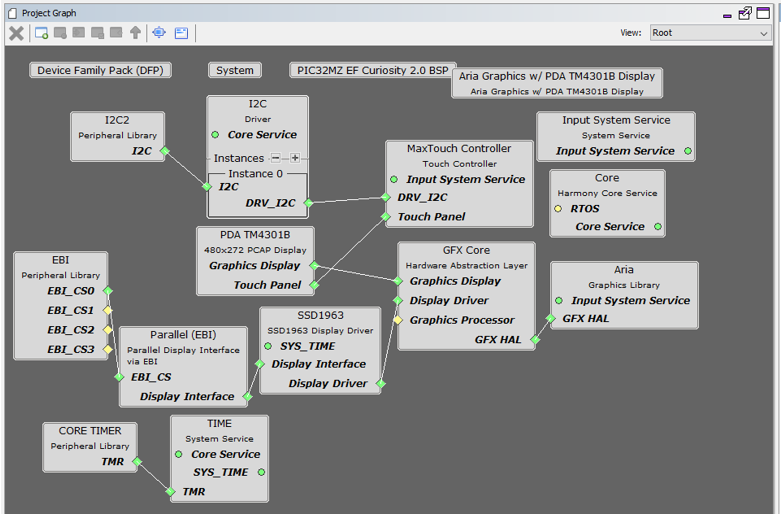
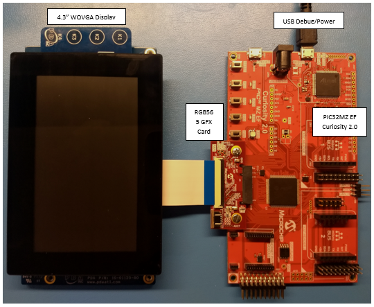
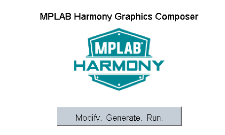
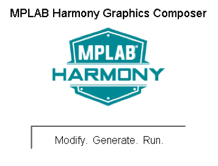

This configuration runs on the Aria Graphics Library on the PIC32MZ EF Curiosity 2.0 with an extern SSD1963 display controller driving a WQVGA display.
The SSD1963 display controller is used to send the display data and timing to a display. The SSD1963 is connected to the PIC32MZ EF thru the EBI peripheral and GPIOs which are used to send 16-bit parallel data/commands and control signals to the SSD1963 controller. The frame buffer is stored externally in the SSD1963 controller.
User touch input on the display panel is received thru the PCAP capacitive touch controller, which sends a notification to the Touch Input Driver. The Touch Input Driver reads the touch information over I2C and sends the touch event to the Graphics Library thru the Input System Service.
• Aria Graphics Library
• Input system service and touch driver
• Time system service, timer-counter peripheral library and driver
• SSD1963 display controller driver
• 16-bit RGB565 color depth support (65535 unique colors)
• EBI peripheral library and driver
• I2C peripheral library and driver
• JPEG image stored in internal flash

The Project Graph diagram shows the Harmony components that are included in this application. Lines between components are drawn to satisfy components that depend on a capability that another component provides.
Adding the “PIC32MZ EF Curiosity 2.0 BSP” and “Aria Graphics w/ Xplained Pro Display” Graphics Template components into the project graph will automatically add the components needed for a graphics project and resolve their dependencies. It will also configure the pins needed to drive the external peripherals like the display and the touch controller.
The template will need to be configured for SSD1963 interface by selecting SSD1963 for the Display Interface option.

The parent directory for this application is gfx/apps/aria_quickstart. To build this application, open the gfx/apps/aria_quickstart/firmware/aria_qs_mzef_cu_tm4301b_ssd1963.X project file in MPLABX IDE that corresponds to the hardware configuration.
The following table lists configuration properties:
|
Project Name |
BSP Used |
Graphics Template Used |
Description |
|
aria_qs_mzef_cu_tm4301b_ssd1963.X |
PIC32MZ EF Curiosity 2.0 |
Aria Graphics w/ PDA TM4301B Display |
PIC32MZ EF Curiosity 2.0 with SSD1963 GFX Interface and 4.3” WQVGA PCAP Touch display |
 Important! Important! |
This application may contain custom code that is marked by the comments // START OF CUSTOM CODE ... and // END OF CUSTOM CODE. When using the MPLAB Harmony Configurator to regenerate the application code, use the "ALL" merging strategy and do not remove or replace the custom code. |
Configure the hardware as follows:
• Attach the RGB565 GFX Interface Card to the J601 connector on the PIC32MZ EF Curiosity 2.0 board.
• Connect the ribbon cable from the WQVGA display to the J2 connector on the RGB565 GFX Interface card.
• Connect a USB cable from the host computer to the DEBUG USB port on the PIC32MZ EF Curiosity 2.0 board. This USB connection is used for power, code download and debugging.
The final hardware setup should be:


When Make changes. Generate. Run. is touched, the button will toggle with each individual touch.

|
MPLAB® Harmony Graphics Suite
|